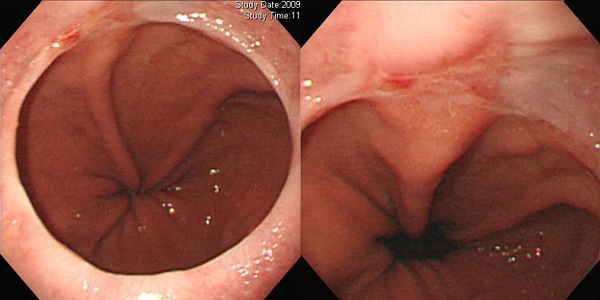

식도 양성 질환
역류·감염·호산구·부식성 식도염부터 Barrett식도, 정맥류, 게실, 이완불능증, SMT·유두종, 열공탈장까지. 증상이 애매하고 소견이 겹치는 병이 많아 형태 기술과 감별이 진단의 핵심이다.
1. 감염성 식도염
감염성 식도염은 정상 면역에서는 드물지만, 면역억제·스테로이드 흡입·항생제·당뇨·알코올·역류질환이 있으면 흔해진다. 국내 건강검진 내시경에서는 칸디다 식도염이 압도적으로 많고, 바이러스성(herpes/CMV)과 결핵성은 상대적으로 드물지만 면역저하자·고령자에서 반드시 염두에 두어야 한다. 세 질환은 내시경 육안소견만으로 서로 감별이 어려운 경우가 많아, 병변의 분포와 궤양 양상, 그리고 임상맥락(면역상태·약물력)을 함께 읽어야 한다.
1-1. 칸디다 식도염 (Esophageal candidiasis)
칸디다 식도염은 AIDS를 비롯한 면역저하자에서 가장 흔한 기회감염이지만, 면역이 정상인 사람에서도 건강검진 내시경에서 우연히 발견된다. 국내 연구에서 무증상 식도 칸디다증의 빈도는 약 0.3~0.4%였고, 동반 소견으로 역류성 식도염이 17.4%에서 관찰되었다. 항생제·스테로이드·한약 복용, 과음, 고령(≥60세)이 위험인자로 보고되었다. 임상적으로 무증상인 경우가 많다.
내시경 소견
- 점막에 붙어 잘 씻겨지지 않는 백색 반점·판(whitish plaque)이 산재하거나 전반적으로 덮인다. 물로 씻겨도 쉽게 벗겨지지 않는다.
- 진행하면 판이 융합하여 궤양·미란을 만들고, 심하면 식도 전장을 덮는다.
- 중증도는 Kodsi 분류(Grade I 산재성 소백반 → Grade IV 전반적 위막·궤양)로 기술한다.
- 스테로이드 흡입제 사용자, 위 수술 후(잔위·문합부), PPI 장기복용자에서 흔하다.


- 조직검사의 민감도가 높지 않다. 나오면 확진이지만, 안 나왔다고 배제할 수 없다.
- 초심자는 헤르페스 식도염과 감별이 어려울 수 있다. 칸디다는 백색 위막이 주되게 덮이고, 궤양이 있어도 위막성 병변이 우세하다.
- Grade I~II 무증상은 치료 없이 경과관찰로 충분하다(자연소실이 대부분). Grade III~IV 또는 증상이 있으면 심한 정도에 따라 anti-HIV 검사 등 면역저하 평가를 고려한다.
- 증상이 있거나 반복되는데 PPI·칸디다가 겹치면 K-CAB(tegoprazan)의 CYP3A4 대사와 항진균제 상호작용 경고가 뜰 수 있다 — 항진균제 투약 1주일만 PPI를 잠시 중단하는 방법이 있다.
- 증상 있는 면역정상인, 경~중등도:
fluconazole 50mg bid po 7-10d - 일반적 표준:
fluconazole 100-200mg qd po 14-21d - 재발성/유지요법(가이드라인):
fluconazole 100-200mg 3x/week— 실제 임상에서 사용은 드물다. - fluconazole 불응·내성:
itraconazole또는amphotericin B(감염내과 협진) - 무증상 경증: 구강위생·취침 전 식사 회피 교육만. 약물 불필요.
1-2. 바이러스성 식도염 (Herpes / CMV)
면역억제자(이식·항암·백혈병·AIDS)에서 흔하고, 면역정상인에서도 과로·스트레스 후 발견된다. 핵심 감별점은 궤양의 margin이다. Herpes는 수포(vesicle)가 터져 궤양이 되면서 주변이 약간 융기된(raised margin) 분화구 모양 궤양(volcano-like ulcer)을 만들고, CMV는 융기 없이 경계가 명확하고 도려낸 듯한 궤양을 만든다. 면역정상인 herpes는 대개 전형적이고, 면역억제자는 비전형·중증이어서 CMV와 감별이 어렵다.
내시경 소견
- Herpes: 초기 3~5 mm 구진·수포 → 미란·궤양으로 진행. 궤양은 둥글고 경계가 명확하며 백황색 삼출물로 덮인다. 융합하면 식도 종축 방향으로 길게 생긴다. 점막에 수포가 있으면 거의 확진이며, 구강·입술의 헤르페스 병소가 동반되면 더욱 확실하다.
- CMV: 주로 하부식도에 2~3 cm의 큰 도려낸 듯한 얕은 궤양(단발 또는 다발성). 주변 점막은 염증성 변화가 적어 부종이 없다. 선상·종축으로 깊은 궤양을 보이기도 한다.
- 면역억제자에서는 CMV와 herpes의 중복 감염이 가능하다.


- Herpes와 CMV의 조직학적 표적세포 위치는 다르지만(편평상피 vs 내피·기질세포), 검사 시점에 정확히 구분하기는 어렵다.
- Herpetic esophagitis가 의심되어도 조직검사에서 안 나오는 경우가 많다. 임상상 전형적이고 수포·구강병소가 있으면 경험적 치료를 고려할 수 있다.
- 경계명료·지도상 궤양이면서 방사선치료 후 전형적 부종이 없다면 명확한 원인(neutropenia·CCRT 등)에서 CMV를 먼저 생각한다.
- 정상면역 성인의 경증 CMV는 치료가 필요 없을 수 있고, 면역저하자는 항바이러스 치료 대상이다.
- Herpes:
valacyclovir 1g tid po 7-10d또는acyclovir 400mg 5x/day po 7-10d - CMV(면역저하·중증):
ganciclovir 5mg/kg IV q12h→valganciclovir 900mg bid po, 통상 10-14일(바이러스혈증 소실까지). - CMV 불응·부작용 시:
foscarnet,cidofovir(감염내과 협진) - 정상면역 경증 CMV: 짧게 치료하고 내시경으로 호전 확인하는 전략도 가능.
1-3. 결핵성 식도염 (Tuberculous esophagitis)
우리나라에서 결핵은 여전히 중요한 질환이며, 식도결핵이라는 병을 알고 있으면 도움이 된다. 중부식도, 특히 상절치 27 cm 근방 전벽(12시 방향)에 궤양성 병소가 있는데 GERD나 암이 아니면 결핵을 의심한다. 폐 실질 결핵이나 종격동 림프절 결핵에 동반되는 2차성 병변이 많고, 림프절에서 누공이 생겨 SMT 모양으로 보이기도 한다.
내시경 소견
- 가장 흔한 형태는 궤양형 — 불규칙한 윤곽, 회백색 궤양저, 주변에 융기되고 침윤된(heaped-up) 연변이 특징이다.
- 비후·과립상 침윤형, 또는 협착을 동반한 종양형 종괴(tumor-like growth with stricture)로 보여 식도암과 혼동될 수 있다.
- 종격동 림프절 결핵이 식도로 누공을 만들면 중앙에 함몰(fistula)이 있는 SMT 모양으로 나타난다.


- 중부식도 전벽의 궤양 + 폐·종격동 결핵 소견이면 강하게 의심한다. 흉부 CT에서 기관분기하 림프절 비대(carinal LN)가 흔하다.
- 식도암·GERD와 감별이 어려우므로 조직검사와 함께 객담·림프절 검체로 AFB 염색·PCR·배양을 시행한다. SMT 모양에서는 EBUS-TBNA가 진단에 유용하고, 배양으로 다제내성 여부까지 확인한다.
- 기관지식도루(broncho-esophageal fistula) 등 합병증 유무를 평가한다.
- 표준 항결핵요법:
INH + RFP + EMB + PZA 2mo → INH + RFP 4mo(총 6개월) - 다제내성(MDR) 확인 시 내성검사 기반으로 약제 재구성 — 결핵 전문가·감염내과 협진.
- 협착·누공 등 합병증은 내시경 또는 외과적 처치를 병행한다.
2. 호산구 식도염 (Eosinophilic esophagitis, EoE)
식도에 호산구가 비정상적으로 침윤하는 만성 면역매개(Th2) 질환으로, 남녀비는 약 3:1이다. 소아는 구토·성장장애·음식 거부로, 성인은 주로 연하곤란(dysphagia)과 음식물 걸림(food impaction)으로 나타난다. 염증기(inflammatory)를 지나 섬유화기(fibrotic)로 진행하며, 진단기준은 조직검사에서 고배율시야당 호산구 ≥15개이다(정상은 ≤5개). 상부 2개·하부 2개, 총 4개 정도에서 조직검사를 하면 민감도가 plateau에 도달한다.
내시경 소견
- Stacked circular rings("feline" esophagus, 고양이 식도) — 윤상 주름이 겹겹이.
- Longitudinal furrows(linear furrowing) — 세로 고랑, 식도 전장으로 이어질 수 있다.
- White papules/exudates — 호산구 미세농양을 반영하는 백색 점·삼출물.
- 점막하 혈관상 감소(edema), 근위부 협착, small-caliber esophagus.
- 중요: EoE의 circular ring에는 거의 항상 longitudinal furrow가 동반된다. 내시경 중 일시적으로 보였다가 사라지는 ring(transient, feline esophagus)은 furrow가 없어 감별된다.


- 조직에서 호산구가 한두 개 나왔다고 진단하면 곤란하다. 반드시 15개 기준을 지킨다.
- 식도에 국한된 경우만 EoE라 부른다. eosinophilic gastroenteritis 등 전신 호산구증의 이차 원인이 배제되어야 한다.
- PPI-REE(PPI 반응성 식도 호산구증)는 더 이상 쓰지 않는 진단명이며 EoE의 아형으로 본다. PPI 자체의 항염 효과로도 일부 호전되므로 PPI 반응만으로 EoE를 배제할 수 없다.
- 무증상이라도 염증이 진행해 협착으로 갈 수 있어, 확진되면 관해 유도와 추적이 권장된다.
- 1차: PPI double dose —
esomeprazole 40mg bid 8wk또는rabeprazole 20mg bid 8wk(HH 동반 시 선호) - 국소 스테로이드(PPI 불응 시):
budesonide oral viscous 1mg bid 8wk(풀미코트 5 puff bid) 또는fluticasone inhaler 440-880µg bid 8wk(흡입하지 말고 삼킴) - 식이요법: 6-food elimination(우유·밀·계란·콩·땅콩·생선/조개)
- 생물학적제제(중증):
dupilumab SC weekly(IL-4Rα 차단, FDA 승인) - 협착: 내시경 풍선확장술. 유지요법:
PPI또는budesonide
3. 부식성 식도염 (Corrosive esophagitis)
강알칼리(양잿물·락스·암모니아수)나 강산(빙초산 등)을 음독하여 발생한다. 알칼리는 융해괴사(liquefaction necrosis)를 일으켜 심부까지 손상시키고 식도에 협착을 잘 만들며, 산은 응고괴사(coagulation necrosis)로 가피가 생겨 심부 진행이 덜하다. 따라서 알칼리는 식도에, 산은 위에 더 큰 손상을 준다. 손상 특성상 2~3주 무렵 조직이 가장 약해져 천공 위험이 최고조가 되고, 이후 반흔이 형성되며 협착·단축이 온다. 부식성 식도염 환자는 식도암 고위험군이다.
내시경 소견
- 점막 발적·부종·미란에서 시작해 백색막·삼출물·궤양으로 진행하며, 심하면 원주상·광범위 괴사.
- 중증도는 Zagar 분류(0 정상 / 1 부종·충혈 / 2a 미란·수포·백색막 / 2b 심부·원주상 궤양 / 3a 국소 괴사 / 3b 광범위 괴사)로 평가하며, 등급이 높을수록 예후가 나쁘다.
- 수 주 후 추적에서 협착이 확인되는 경우가 많다.


- 부식성 식도염 치료는 100% supportive care이며, 내시경은 금식기간 결정을 돕는 보조 수단이다.
- 의식 저하·쇼크·중증 독성 징후가 있으면 내시경은 금기다. 이는 부식성 식도염이 아니라 전신 중독 상황이다.
- 안정적이면 이른 시일(가능하면 12~24시간 이내)에 시행하고, 5~15일 사이는 조직 연화로 천공 위험이 커 피하는 것이 원칙이다. 설상 원주상 화상이 보이면 그 지점에서 멈춘다.
- 후두개(epiglottis)·인두 3도 화상은 내시경 금기이며, 인두 병변 관찰이 중요한 정보가 된다.
- 협착 예방을 위한 스테로이드는 섬유아세포·육아조직을 억제하나 감염 감수성 증가·종격동염 masking 우려가 있어 권장되지 않는다.
- 기본: 금식·수액·전해질, 필요시 intubation·중환자실 치료. 손상 등급에 따라 식이 재개 시점 결정.
- 산억제(궤양·통증 완화 목적):
esomeprazole 40mg IV qd → po 40mg qd - 협착: 급성기 지나 반흔성 협착이 생기면 내시경 풍선확장술·bougienation을 조심스럽게 고려. 증상이 심하지 않으면 무리한 확장은 천공 위험으로 권하지 않는다.
- 합병증(천공·누공·농양) → 외과 협진. 식도암 감시 필요.
4. 약제성 식도염 (Pill-induced esophagitis)
정제를 물 없이 또는 누운 자세로 삼켜 약제가 식도 점막에 오래 접촉하면서 국소 손상을 일으키는 질환이다. 호발 부위는 제2생리적 협착부(대동맥궁·좌주기관지 교차부, 상절치 25 cm 근방)이다. 원인약은 테트라사이클린·독시사이클린·clindamycin, aspirin·NSAID, KCl, 황산제일철, quinidine, bisphosphonate, 스테로이드 등이다. 약 복용 후 갑작스러운 흉통·연하통(odynophagia)·가슴쓰림이 특징이다.
내시경 소견
- 협착부에 경계가 비교적 명확한 불규칙 원주상 궤양이 단발 또는 다발성으로 생긴다.
- 궤양 바닥에 백태·삼출물이 덮이고, 주변 발적·미란이 동반된다.
- 증상 시작과 약 복용 시점이 밀접하다는 병력이 진단의 핵심이다.


- 전형적 병력(소량의 물과 약을 먹고 바로 누웠다 등)이 있으면 조직검사까지 필요하지 않다. 바이러스·결핵·암과의 감별이 필요할 때만 조직검사를 한다.
- 치료 후 수 주 뒤 재검으로 완전 치유를 확인한다. 불응·지속되면 다른 원인을 재검토한다.
- 예방이 가장 중요하다: 약과 함께 물 최소 100 mL, 복용 전 물 한 모금, 복용 후 5~10분 이상 앉거나 서 있기.
- 원인약 중단·변경(가능하면 액제·다른 성분으로).
- 산억제:
rabeprazole 20mg qd po 2-4wk또는esomeprazole 40mg qd po 2-4wk - 필요시 점막보호·진통(증상에 따라). 대부분 수 주 내 자연 치유된다.
5. Sloughing esophagitis (EDS, Exfoliative esophagitis)
Sloughing esophagitis = exfoliative esophagitis = esophagus dissecans superficialis(EDS)는 식도 상피가 위막(pseudomembrane)처럼 벗겨져 덮이는 질환이다. 대부분 약제가 원인이고 화상도 원인이 될 수 있다. NSAID·일부 항생제가 잘 알려져 있으며, 최근 NOAC(특히 dabigatran)이 중요 원인으로 부각되었다. Dabigatran 복용 후 내시경에서 식도염이 약 20% 관찰되고, 그중 대부분에서 중·하부식도의 longitudinal sloughing cast가 특징적으로 보인다는 보고가 있다.
내시경 소견
- 중·하부식도에 세로로 벗겨진 상피막(longitudinal sloughing epithelial cast)이 붙어 있다.
- 하얀 약을 바른 듯 위막이 코팅된 것처럼 보이나, 포셉으로 긁어도 잘 벗겨지지 않고 딱 붙어 있다.
- 원주상 미란이 동반되기도 하며, 원인약 중단 후 호전된다.
- 조직에서 벗겨진 상피편과 염증세포 침윤, 호산구성 변성(eosinophilic degeneration)이 보인다.


- 원인은 대부분 약제성 점막손상이다. 복용 약물력(NSAID·항생제·NOAC)을 반드시 확인한다.
- Odynophagia가 흔하지만 무증상 우연 발견도 많다. 무증상이고 심하지 않으면 경과관찰로 충분하다.
- dabigatran 환자에서 흉통·연하통이 있으면 이 진단을 떠올린다. 필요하면 warfarin 등으로 변경 후 3개월 내 소실된다.
- 원인약 중단/변경(예:
dabigatran → warfarin). - 산억제:
rabeprazole 20mg qd po 10d또는esomeprazole 40mg qd po 4-8wk - 무증상·경증: 약물 없이 경과관찰. 지속·악화 시 원인 재평가.
6. 식도 화상 (Esophageal burn)
뜨거운 음식(감자·동태알 등)을 급하게 삼켜 식도 점막이 열손상을 받는 경우다. 대개 국소적이고 시간이 지나면서 자연 치유된다. 증상은 삼킴 시 통증·흉통이나, 수일 지나면 사라지는 경우가 많다.
내시경 소견
- 손상 부위에 궤양·미란, 주변 발적·부종. 조직에서 육아조직·괴사성 부스러기(granulation tissue with necrotic debris)가 보인다.
- 대개 병변이 국한되어 있고 주변 점막은 비교적 정상이다.


- 증상이 호전되고 있고 천공 징후가 없으면 약물 없이 경과관찰한다.
- 너무 단단하거나 자극적인 음식을 피하고, 음식을 잘게 씹도록 교육한다.
- 통증이 심하거나 지속되면 약제성·부식성·감염성 손상을 감별한다.
- 대부분 특별한 치료 불필요 — 식이 조절로 경과관찰.
- 증상 지속 시 대증:
PPI prn또는rabeprazole 20mg qd 1-2wk
7. 식도 이물 (Esophageal foreign body)
생선뼈(제주 등 지역에서 특히 흔함), 고기 덩어리, 의치, 동전, 디스크형 수은전지, 자석 등이 식도에 걸린다. 과거에는 24시간 내 제거가 원칙이었으나, 최근 가이드라인은 끝이 뾰족한 이물과 디스크형 수은전지·자석이 식도에 걸리면 6시간 이내 제거를 권한다. 식도는 천공 시 종격동염 등 치명적 합병증으로 이어질 수 있어 부위와 이물의 성상 파악이 최우선이다.
내시경 소견·평가
- 이물 자체와 함께 주변 점막의 찰과상·궤양·출혈, 매복(migration) 유무를 관찰한다.
- 이물의 종류(둔기 vs 예기·날카로움, 크기, 방사선투과성)와 정확한 위치를 먼저 평가한다.
- 식도 병변(협착·종양·이소성 위점막 등)이 이물 정체의 배경인 경우가 있으므로 제거 후 식도를 재관찰한다.


- 날카로운 이물은 보호 캡(cap)을 씌우거나 이물을 cap 안으로 끌어들여 제거하여 점막 손상을 줄인다.
- 천공이 의심되면(종격동 기종·기흉 등) 내시경적 제거를 시도하지 말고 외과 협진을 우선한다.
- 고기 덩어리(food impaction)는 배경 질환(협착·EoE)을 동반한 경우가 많아 제거 후 원인 평가가 필요하다.
- 내시경적 이물 제거(포셉·바스켓·회수망·cap·overtube).
- 점막 손상 동반 시 산억제:
esomeprazole 40mg qd po 2-4wk - 합병증(천공·종격동염) 의심 시 금식·광범위 항생제·외과 협진.
8. 식도 melanocytosis (Melanosis)
Melanose(melanin이나 lipofuscin 침착에 쓰이는 용어)는 양성이 확실하지만, melanocytosis(melanin 생성세포의 증가)에서는 malignant melanoma 발생이 가능한 것으로 추정된다. 문제는 식도 조직검사에서 melanocytosis와 melanosis가 명확히 구분되지 않고 보고되는 경우가 많다는 점이다. 식도에서 melanosis로 나오면 대부분 melanocytosis이며, 전암성 여부가 달라질 수 있으므로 용어를 구분하는 것이 바람직하다.
내시경 소견
- 식도 점막에 흑갈색(dark brown)의 색소침착이 반점상·반상으로 나타난다.
- 병변 자체는 평탄하고 융기가 없으나, 편평상피내암(squamous cell carcinoma in situ)이나 melanoma에 동반될 수 있어 주변 점막을 주의 깊게 본다.
- 현저한 melanocytosis에서 수년 후 melanoma로 진행한 증례가 보고되어 있다.


- 감별: 원발성 식도 흑색종(예후 매우 불량, 유색/무색 용종상 종괴), pseudomelanosis(anthracosis·이물색소·hemosiderosis), black esophagus(괴사성·허혈성), melanocytic nevus.
- Melanocytosis는 melanoma의 전구병변일 수 있으나 진행 증례는 소수 보고에 불과하며 추적 정보가 제한적이다.
- 조직 소견이 melanosis로 나와도 임상적으로 melanocytosis 가능성을 염두에 두고 추적한다.
- 특별한 약물치료는 없다. 조직검사로 확진하고 추적 내시경(예: 6개월~1년 간격)으로 크기·형태 변화를 관찰한다.
- melanoma로 진행하면 외과적 절제·항암치료 등 종양 치료로 전환.
- 환자에게 악성변화 가능성을 경고하고 정기 추적의 중요성을 설명한다.
9. 식도 이소성 위점막 (Inlet patch / Heterotopic gastric mucosa)
식도 이소성 위점막(HGM)은 상부식도, 특히 상부식도괄약근 직하에 위점막이 남아 있는 것으로, 육안적으로 확인되는 병변을 inlet patch라 부른다. 발생학적으로 배아기 식도의 원주상피가 편평상피로 대체되는 과정에서 남은 부분으로 설명되며 대개 선천성이다. 내시경 연구에서 0.1~10%로 보고되고, 관심을 가진 의사가 보면 2.6%, 보통 의사가 보면 0.4%에 불과할 정도로 진단율 차이가 크다. 대부분 무증상이며, 웹·협착·궤양·누공이나 극히 드물게 상부식도선암과 연관될 수 있다.
내시경 소견
- 상부식도에 경계가 명료한 연어빛/붉은색의 벨벳 모양(velvet-like) 반상 발적이 보인다. 표면은 매끈하고 비로드천 같다.
- 보통 둥글지만 semi-circular·circular인 경우도 있다.
- 상부식도는 놓치기 쉬운 blind area이므로, 내시경을 삽입할 때보다 빼면서 천천히 관찰해야 발견된다.
- 하부식도에도 이소성 위점막이 생길 수 있다(하부식도 HGM/ectopic gastric mucosa) — short-segment Barrett과 감별이 필요하다.


- 육안적으로 특별한 점이 없는 전형적 inlet patch에서는 조직검사까지 필요하지 않다. 대부분 임상적 의의가 거의 없다.
- inlet patch에서도 선암이 발생할 수 있으나, 30년 경력에서도 극히 드물다. 요철·궤양·협착 등 이상 소견이 있을 때만 조직검사한다.
- HGM 분류: I 무증상 / II 증상(형태변화 없음) / III 증상 + 형태변화(웹·협착·궤양·누공) / IV 상피내 종양(이형성) / V 침윤성 선암.
- inlet patch의 H. pylori 집락은 위에 H. pylori가 있을 때만 발견된다. 증상성 대형 inlet patch에서는 제균을 고려할 수 있다.
- 무증상: 치료 불필요 — 기술 후 경과관찰.
- 증상성(웹·협착·역류 증상): 산억제
esomeprazole 40mg qd pc 4-8wk또는kcab(tegoprazan) 50mg qd 4-8wk - H. pylori 양성:
amox 1g bid pc + clarithro 500mg bid pc + PPI bid pc 14d - 증상 지속·합병증: 내시경 풍선확장술 또는
APC소작(globus 등 선택적 증례). - 이형성·선암: 내시경 절제 또는 수술적 절제.
10. 위식도역류질환의 내시경 소견
위식도역류질환(GERD)은 증상과 점막손상의 조합으로 진단되는 스펙트럼 질환이다. 내시경은 GERD 평가의 출발점이지만, 결코 전부는 아니다. 역류 증상으로 진단한 GERD 환자의 30~40%에서만 내시경에서 점막결손(mucosal break)이 관찰되고, 나머지 60~70%는 점막결손 없이 증상만 있는 비미란성역류질환(NERD)으로 분류된다. 즉 내시경이 정상이라고 해서 GERD가 아닌 것이 아니고, 반대로 점막결손의 크기와 증상의 정도가 항상 비례하지도 않는다.
점막결손과 LA 분류
점막결손은 "slough나 erythema가 주변의 정상 점막과 뚜렷하게 구분되는 부위"로 정의된다. 이 정의에 따르면 점막결손은 미란·궤양뿐 아니라 경계가 뚜렷한 선상 발적까지도 포함한다. 전형적인 소견은 편평상피-원주상피접합부(squamo-columnar junction)에서 시작하여 근위부로 이어지는 식도 주름 상단의 선상 미란이며, 역류가 심해지면 길어지고 서로 융합된다.
점막결손은 1996년 제안된 LA(Los Angeles) 분류로 기술한다.
- LA-A — 점막결손이 융합하지 않으며 5 mm 이하.
- LA-B — 점막결손이 융합하지 않으며 5 mm 초과. 하나의 종주성 주름 위에 다수의 결손이 있고 길이의 합이 5 mm를 넘는 경우도 포함한다.
- LA-C — 융합되었으나 원주의 3/4 미만.
- LA-D — 융합되어 원주의 3/4 이상.
LA-A·LA-B는 경증, LA-C·LA-D는 중증 역류성식도염으로 나눈다. LA-C·LA-D는 대부분 열공탈장(hiatal hernia)에 동반되며, 열공탈장으로 위식도접합부 압력이 낮아져 위산이 과도하게 역류하면서 결손의 하단이 융합된 결과다. 중부식도나 상부식도에서 융합되는 소견은 거의 없다.


- 추적 관찰한 2018 Lyon consensus에서 LA-A·LA-B는 pathologic reflux의 conclusive evidence에 포함되지 않았고 borderline/inconclusive로 분류되었다.
- 특히 LA-A는 그 자체만으로는 GERD의 객관적 증거가 아니며, PPI 반응이나 24시간 보행성식도산도검사 등으로 보충해서 해석해야 한다.
- 결국 GERD는 하나의 균질한 질환이 아니라 여러 phenotype의 모임이다. "PPI를 단기간 써서 깜짝 놀랄 만큼 증상이 좋아지는" 환자가 진짜 GERD에 가깝다.
비미란성역류질환(NERD)에서 보이는 소견
점막결손이 없다는 것이 내시경이 정상이라는 뜻은 아니다. NERD 환자의 상당수에서 경하거나 때로 심한 열공탈장이 있고, 식도가 단축되면서 하부식도 주행이 구불구불하게 관찰되기도 한다. 열공탈장은 내시경 의사의 습관(공기 주입)과 환자의 호흡에 따라 매번 다르게 관찰되어 객관성이 낮다. 뚜렷한 2 cm 이상의 변화에 대해서는 열공탈장 진단을 붙이지만, 2 cm 이하의 경한 변화는 호흡에 따라 다르게 보인다.


부분 치유와 합병증
GERD는 악화와 호전을 반복하는 만성질환이므로 내시경 소견도 시기에 따라 변한다. PPI를 투여하면 점막결손이 호전되지만 장기치료에서는 on-demand 요법이 적용되어 부분 치유 상태로 관찰되기도 한다. 점막결손이 남았다고 해서 반드시 치료를 강화해야 하는 근거는 아니다 — 환자 증상을 다시 평가하는 것이 우선이다. 만성 역류성식도염의 가장 중요한 합병증은 협착으로, 심한 열공탈장 환자의 B-ring(= mucosal ring = Schatzki ring) 부위가 흔하게 짧게 좁아진다. 출혈이나 만성 빈혈로 내원하는 환자도 있다.


미세변화(minimal change)는 진단명으로 쓰지 않는다
과거 하부식도 점막의 색조 변화나 irregular Z-line을 미세변화(minimal change lesion)로 지칭하며 GERD의 가벼운 내시경 소견으로 간주한 적이 있다. 그러나 관찰자간·관찰자내 차이가 너무 크고 GERD 증상과의 연관성도 낮아서, 현재는 경한 열공탈장에 따른 이차적 변화로 이해하며 역류성식도염의 내시경 소견이 아닌 것으로 판단한다. "Reflux esophagitis, minimal change" 또는 "reflux esophagitis (LA-M)"라는 진단명은 절대 사용하지 말 것. LA 분류에도 minimal change는 존재하지 않는다.
- 미세변화는 reproducibility가 없고 임상적 의의가 없다. 이 항목이 들어가면 거의 모든 내시경 결과지에 역류성식도염이 붙는 사태가 벌어진다.
- 비미란성 식도질환에서도 이제 정당하게 PPI를 처방할 수 있으므로, 삭감을 피하려고 엉뚱한 진단명을 붙일 이유가 없다.
- 뚜렷한 점막결손이 없으면 정상으로 판독하는 것이 원칙이다. 진단명은 환자에게 주홍글씨가 될 수 있다.


- 역류성식도염의 가장 중요한 감별은 위식도접합부암이다. 전형적인 증상과 전형적인 점막결손이면 조직검사·추적내시경이 모두 필요하지 않지만, 연하곤란·체중감소·비전형적 소견이 있으면 조직검사로 악성질환을 감별한다.
- 미란성·비미란성 모두 위산 hypersensitivity가 관여하므로, 증상 기반 치료가 형태 분류보다 우선한다.
- 미란성식도염(LA-A~D) → 표준용량 PPI:
esomeprazole 40mg qd pc 4-8wk또는rabeprazole 20mg qd pc. - 비미란성역류질환(NERD) → half dose로 시작:
esomeprazole 20mg qd pc. - 무증상 미란성식도염 → 비약물요법 위주(체중관리·야식/과식/지방식 회피).
- 출혈 동반 → 내시경 응고지혈술 후
esomeprazole 40mg IV q12h등.
LA-A, B mild GERD, NERD: PCAB(KCAB) Standard dose 4~8weeks
LA-C, D mod to severe GERD : PCAB(KCAB) Standard dose 8 weeks

상위 개념과 용어
GERD가 가장 상위 개념이고, 정의는 "위 내용물의 식도 역류로 증상 및 합병증이 발생" 한 것이다. 내시경 소견으로 GERD를 정의하지 않는다.
- GERD 중 내시경에서 GE junction 및 그 상부에 역류의 증거(mucosal break)가 보이면 Reflux Esophagitis. GERD의 30~40%에서 보이며 LA classification을 적용한다.
- 내시경적 증거가 없으면 NERD(Non Erosive Reflux Disease). KCAB은 NERD에 보험 인정(26-09-23 기준).
점막 결손(mucosal break)의 정의 — "an area of slough or erythema clearly demarcated from the adjacent normal appearing mucosa". 경계가 명확하고 주변 정상 점막보다 발적된 것. 미란·궤양·발적을 모두 점막 결손으로 본다.
LA classification
| 등급 | 정의 |
|---|---|
| LA-A | mucosal break 1개가 1개의 fold만 침범(융합 없음), 길이 ≤5 mm |
| LA-B | mucosal break 1개가 1개의 fold만 침범(융합 없음), 길이 >5 mm |
| LA-C | mucosal break가 2개 이상의 fold를 침범(융합), 침범 길이가 전체 원주의 75% 이하 |
| LA-D | 융합된 mucosal break가 전체 원주의 75% 이상 침범 |
- LA-A, B가 경증, LA-C, D가 중등증~중증. 과거의 Minimal Change(MCD)는 더 이상 쓰지 않는다.
- LA-A는 굳이 약물치료를 시작하지 않는다.
- LA-B, C, D 및 조직검사로 증명된 Barrett's esophagus는 PROVEN GERD — 즉시 약물치료 개시 적응. 증상이 있는 NERD도 (proven은 아니지만) 치료를 시작한다.
Hiatal hernia — Z-line(Squamo-Columnar epithelium 경계, B-ring)와 muscular indentation(식도-위 경계 근육 ring, A-ring) 사이 간격이 2 cm 이상일 때.
치료
- LA-A, B / NERD — PCAB(KCAB) standard dose 4~8주
- LA-C, D (중등증~중증) — PCAB(KCAB) standard dose 8주
- 증상이 좋아지면 2~3일에 한 번 PPI/PCAB 복용으로 step down, 3개월 정도 지켜보고 괜찮으면 중단.
환자 설명 — "위와 식도 사이를 잠가 주는 근육이 헐거워져서 생기는 병입니다. 속쓰림, 가슴쓰림, 가슴 불편감이 있을 수 있고 내시경 소견은 정상일 수도, 아닐 수도 있습니다. 근육이 한 번 헐거워지면 근본적으로 고쳐 주는 치료는 어려워서 불편하지 않게 조절하는 것이 좋습니다. 1~2개월 약을 드셔 보시고, 불편하면 계속 드시면서 점점 감량하고, 괜찮아지면 끊을 수 있습니다."
11. 양성자펌프억제제(PPI)
PPI는 GERD·소화성궤양 치료의 근간이다. 약리학적으로 PPI는 그 자체가 prodrug이며, 위산에 의해 활성형으로 변환된 뒤 parietal cell의 H⁺/K⁺-ATPase(proton pump)에 비가역적으로 결합하여 위산분비를 억제한다. 활성화를 위해 proton pump가 자극되어야 하므로 식전에 투여하는 것이 원칙이다. 대부분의 PPI는 CYP2C19 대사에 의존하므로, rapid metabolizer에서는 약효가 미약할 수 있고 이때 rabeprazole(non-enzymatic 대사)로 바꾸면 도움이 된다.
상대적 역가(relative potency)
약효는 분자마다 다르다. Omeprazole equivalent로 환산하면 저용량에서 고용량 순으로 다음과 같다(한국 시판 용량 기준).
- Pantoprazole 20 mg = 4.5 / Pantoprazole 40 mg = 9 / Omeprazole 10 mg = 10 / Lansoprazole 15 mg = 13.5
- Esomeprazole 10 mg = 16 / Rabeprazole 10 mg = 18 / Omeprazole 20 mg = 20 / Lansoprazole 30 mg = 27
- Esomeprazole 20 mg = 32 / Rabeprazole 20 mg = 36 / Esomeprazole 40 mg = 64
우리나라는 esomeprazole 40 mg을 표준용량으로 보지만, 일부 유럽 전문가들은 20 mg을 표준으로 간주하기도 한다. 서로 다른 PPI를 역가에 따라 교체 사용하는 근거가 여기에 있다. PPI를 갈아서 투약하면 장용 코팅이 파괴되어 parietal cell에 도달하기 전에 위내에서 활성화되어 효과가 없다.


- 복용 시점은 아침 식전 30분이 가장 좋다. 그다음은 취침 전, 저녁 식전, 점심 식전 순이다.
- 새벽에 증상이 심하면 저녁 식전 또는 취침 전으로 옮긴다. 저녁 식사를 가볍게 하고 취침 2시간 전부터 금식하도록 권한다.
- 식후에 먹어도 pH 4 이상 유지시간은 큰 차이가 없다는 자료도 있다. "가능하면 식전, 증상이 잘 조절되면 그대로"가 현실적이다.
- 2주 처방 후 threshold therapy로 감량하도록 유도한다. 첫 처방부터 8주를 주면 환자가 감량법을 배우지 못한다.
- 체중 관리가 약보다 훨씬 중요하다. 과체중·비만 환자에게 PPI만 처방하는 것은 의사의 직무 유기다.
- 미란성 GERD:
esomeprazole 40mg qd pc 4-8wk - 유지요법(threshold):
esomeprazole 20mg qod pc→ 주 2회로 간격 확대 - 야간 증상:
rabeprazole 20mg qd pc(dinner)또는 취침 전 1회 - H2RA로 대체:
famotidine 20mg bid(GERD에서 역할은 제한적)
12. PPI 부작용
PPI 부작용에 대한 우려가 크지만, 인과관계를 입증하기는 쉽지 않다. 온갖 장기의 온갖 부작용이 언급되지만, 2017년 Gastroenterology 리뷰는 "PPI 사용을 심각한 장기 부작용과 연결 짓는 대부분의 근거는 약하고 불충분하다. 적절한 적응증에 적절한 용량을 쓰는 것을 막아서는 안 된다"고 결론지었다. 관찰연구에서 거론되는 부작용의 relative risk가 그리 높지 않고, 관찰연구의 bias를 고려하면 보통 RR이 3 이상은 되어야 의미가 있다.
무작위 임상시험이 말해주는 것
33개국에서 pantoprazole 40 mg 또는 위약을 3년간 투여한 대규모 무작위 대조군 연구(Gastroenterology 2019)의 결과는 명확하다.
- 심근경색·뇌경색·심혈관 사망 — 차이 없음(HR 1.04, 95% CI 0.93–1.15).
- 감염성 장염 — 증가(HR 1.33, 95% CI 1.01–1.75, P=0.04).
- 위축성 위염, 폐렴, 골절, C. difficile, COPD, 당뇨, 만성 신부전, 치매 — 차이 없음.
즉 감염성 장염을 제외하면 장기 사용에 따른 부작용 증가가 입증되지 않았다. 적응증이 있는 환자에서 PPI의 득이 실보다 훨씬 크다.
골밀도와 골절
PPI 장기 복용이 골대사에 영향을 미치는 기전으로 (1) 칼슘 흡수 억제, (2) 파골세포의 proton pump 억제, (3) 비타민 B12 부족, (4) 고가스트린혈증에 의한 PTH 증가 등이 언급된다. 역학연구에서 골절 위험 증가가 밝혀졌지만, 고령·스테로이드·음주·흡연 등 고위험군에서 고용량을 장기 사용할 때에만 선택적으로 골밀도 검사를 고려하면 된다. Routine 검사는 부적합하다. 골다공증 예방을 위해서는 증상조절에 필요한 최소량을 쓰는 것이 좋다. 칼슘 보충이 필요하면 위산이 적은 상황에서도 흡수가 좋은 calcium citrate를 선택한다.
PPI 연관 위점막병변
PPI 장기 사용자의 위내시경에서 특징적인 위점막 변화가 관찰된다. 두 가지 기전이 제시된다. parietal cell이 lumen 내로 bulging 되면서 gland의 ductal dilatation이 일어나는 기전(→ fundic gland polyp, cobblestone appearance)과, foveolar epithelial hyperplasia(→ hyperplastic polyp, multiple white flat elevated lesion)이다. 이 소견들을 병리과에 임상정보 없이 보내면 "비활동성 위염"이라는 무의미한 결과가 나오기 쉽다.


- Clopidogrel — PPI가 CYP2C19를 억제해 약효를 낮출 가능성이 제기되었으나, 무작위 연구(Bhatt NEJM 2010)와 메타분석에서 임상적으로 의미 있는 영향은 없는 것으로 정리되었다. 다만 저자는 clopidogrel 사용자에서 omeprazole·esomeprazole을 가급적 피한다.
- Warfarin — 필요하면 투여하되 간헐적으로 prothrombin time을 확인한다. 주로 pantoprazole을 선택한다.
- 철분제 — 흡수 저해가 이론적으로 가능하나 임상적으로 고려할 정도는 아니어서 그냥 병용 처방한다.
- 고위험군 장기 사용 시 골밀도 검사 +
calcium citrate보충 검토. - 부작용 의심 시 약제 교체(약제마다 부작용 profile이 다르다).
- 최소 유효량·최단 기간 원칙, threshold therapy로 감량.
13. P-CAB — tegoprazan(케이캡, K-CAB)
P-CAB(potassium-competitive acid blocker)은 PPI의 한계를 보완한 새로운 위산분비억제제다. 국내 신약 tegoprazan은 PPI와 작용 방식이 근본적으로 다르다. PPI는 prodrug으로서 위산에 의해 활성화된 뒤 비가역 결합하지만, P-CAB은 prodrug이 아니어서 proton pump의 자극 없이 직접 가역적으로 결합한다. 따라서 식사와 무관하게 투여할 수 있고, 첫 날부터 거의 최대 효과가 난다. K-CAB의 특징은 fast, strong, long으로 요약된다.
- 강력한 위산억제 — pH 4 이상 기준보다 pH 6 이상 기준으로 비교하면 PPI와의 차이가 현저하다. 50 mg/day로 야간에도 pH 4 이상이 유지되고, 50 mg bid면 거의 종일 pH 6 이상이 유지된다.
- 빠른 작용 — 투여 1시간 이내에 pH가 상승하고, 투여 첫날부터 최대 효과에 가깝다.
- CYP2C19 의존성 낮음 — CYP3A4가 주 대사경로여서 CYP2C19 관련 약물상호작용 문제가 상대적으로 적다.
- 식사 영향 없음 — 식전·식후 차이가 크지 않다.
- Hypergastrinemia가 vonoprazan보다 훨씬 적다 — 기전은 미상이며 향후 연구가 필요하다. 위산억제가 강한데 gastrin 상승이 적다는 것은 쉽게 이해되지 않는 현상이다.
- 간독성 문제 없음 — 과거 P-CAB에서 문제였던 hepatotoxicity가 임상에서 중대 이상반응으로 나오지 않았다. 다만 처음 사용 환자는 2~4주 후 혈액검사를 고려한다.
- MMC(migrating motor complex) III를 활성화 — 서열운동에 나쁜 영향을 미치지 않아 PPI 후 소화불량이 덜할 것으로 기대된다.


- NERD에서 full dose 처방이 가능하다는 점이 vonoprazan과의 차이다(vonoprazan은 NERD 적응증이 없다).
- PPI-refractory GERD type 1(위산을 더 강력하게 억제해야 하는 군), Helicobacter 제균치료에서 특히 유용하다.
- 위산억제가 강력하므로 tegoprazan에 반응이 없으면 위산분비가 문제가 아닌 functional heartburn으로 간주할 수 있을 정도다. PPI test를 P-CAB test가 대체할 수 있다.
- P-CAB과 PPI는 서로 대체라기보다 보완 관계다. 위산의 과도한 억제도 나름의 문제를 유발할 수 있으므로 환자 상황에 따라 선택한다.
- pH 4 이상을 올리는 효과는 50 mg/day와 100 mg/day가 큰 차이가 없어 GERD에는 50 mg/day가 선택되었다. 그러나 pH 6 이상을 올리는 효과는 100 mg/day 또는 50 mg bid가 훨씬 좋으므로, Helicobacter 제균이나 소화성궤양 출혈에는 double dose가 좋다.
- GERD:
kcab(tegoprazan) 50mg qd 1mo(식사 무관) - 약제 분할·제형: 25 mg 유지요법, every other day 연구 진행.
- Helicobacter 제균·출혈:
kcab(tegoprazan) 50mg bid또는 100 mg qd. - 유지요법(threshold):
kcab(tegoprazan) 25mg qod.
14. 비약물요법과 PPI 용법 — GERD FAQ
GERD는 완치되는 병이 아니라 관리하는 병이다. 고혈압·당뇨처럼 평생 관리한다는 개념을 처음부터 설명해야 한다. 생활습관 교정 중 체중 관리가 압도적으로 중요하다. BMI가 3.5 kg/m² 감소(대략 10 kg 감량)하면 GERD 위험이 약 40% 감소한다. 일반적인 음식은 크게 제한하지 않고, 본인이 먹고 불편한 음식만 피하면 된다.
- 체중 감량 — 가장 중요. 과체중·비만이면 강력히 권한다.
- 야식·과식·지방식 회피, 취침 2시간 전 금식.
- 적절한 운동. 금연은 그 자체로 권하되 GERD 증상 개선 효과는 미약하다.
- 수면 자세(좌측와위, 상체 거상)는 이론상 그럴싸하나 실제로 도움되지 않는다. 편하게 자는 것이 최선이다.
유지요법 — step down과 threshold therapy
치료 원칙은 step down이다. 처음에 강하게 치료하여 증상을 완화한 뒤 최소한의 약으로 유지한다. 현재 권유되는 방법은 PPI on-demand 또는 threshold therapy다.
- On-demand — 약을 끊고 증상이 발생하면 복용, 문제없으면 다시 중단. 증상 발생 후 약을 먹으므로 간간히 통증을 느낀다.
- Threshold therapy — half dose로 매일 복용하다 증상이 조절되면 이틀에 한 번, 3일에 한 번으로 간격을 늘린다(예: 짝수 날만, 월·목요일). 저자는 이 방법을 선호한다.
- 과거의 intermittent therapy(증상 시 정해진 2~4주 복용 후 중단)나 휴약기는 현재 권유되지 않는다.


- "약을 끊으면 2~3일 내 다시 증상이 생긴다" — GERD는 관리하는 병이므로 정상이다. 비약물요법 효과는 제한적이므로, 가능한 한 적은 용량·간격으로 조절한다.
- "H2RA를 장기 처방받았다" — GERD 치료 원칙은 PPI로 시작해 감량하는 것이다. H2RA 역할은 거의 없다(빈번한 처방은 과거 삭감 트라우마의 잔재다).
- "식후에 먹어도 되나" — 가능하면 식전, 식후여도 증상이 잘 조절되면 그대로 두어도 된다.
- "목 이물감(globus)에 PPI를 계속 먹어야 하나" — 전형적 식도증상 없이 후두증상만 있으면 PPI 효과는 매우 약하다. 고용량 장기 사용은 약물과용이다.
- 초기:
esomeprazole 40mg qd pc 2wk후 반응 확인. - 유지(threshold):
esomeprazole 20mg qod pc→ 주 2회. - Breakthrough 시 antacid를 10개 정도 처방하여 돌발 증상 시 복용.
- 체중·생활습관 교정을 매 방문마다 강조한다.
15. 무증상 역류성 식도염
건강검진 내시경에서 유의한 식도염이 관찰되나 증상이 없는 경우를 무증상 역류성 식도염이라 한다. 국내 건진 수진자에서의 빈도는 대략 7% 정도로 추정된다(내시경에서 erosion이 있는 사람이 약 10%, 이 중 약 3%가 유증상군). 진단명으로는 무증상 미란성 식도염이 더 정확하지만 관례상 무증상 역류성 식도염으로 부른다.
자연사에 대한 좋은 자료는 없지만, 2004년 삼성서울병원 건진 자료에 따르면 치료 없이 추적한 무증상 역류성 식도염 환자의 91.4%가 자연 호전되었고, 4.9%는 변화가 없었으며, 악화된 경우는 3.7%에 불과했다. 여러 해 검사를 반복해도 LA 등급이 진행하는 경우는 드물다.


- 저자는 비약물요법만 권한다. 체중관리·적절한 운동·야식/과식/지방식 회피 등이다.
- 증상이 없는데 PPI를 쓰면 감량의 지표가 없어 계속 쓰게 되고, "경하면 약을 적게, 심하면 많이"라는 모순이 생긴다.
- LA-C·LA-D는 대부분 전형적 증상을 동반하므로 진짜 무증상 C·D는 매우 드물다. 정말 증상이 없더라도 비약물요법을 권하며, stricture가 있으면 약물 필요성을 환자와 상의한다.
- 무증상 성인의 검진 내시경에서 점막결손이 없으면 정상으로 판독하는 것이 원칙이다.
- 기본: 비약물요법(체중관리·생활습관 교정).
- 증상이 확인되거나 LA-C·LA-D/stricture →
esomeprazole 40mg qd pc등으로 시작 후 감량. - 무증상 LA-A·LA-B → 약물 없이 정기 위암 검진 내시경만.
16. Acid pocket
식후에 위산역류 증상이 흔해지는 paradox를 설명하는 개념이 acid pocket이다. 식후 새로 만들어진 위산이 위식도접합부 근처에 모여 하나의 산성 저장소를 형성하는 현상으로, 소량의 acidic fluid가 acid pocket에서 역류하여 식도벽을 코팅하는 것만으로도 증상이 발생할 수 있다. GERD에서 역류되는 acidic fluid의 양은 의외로 적다.
Acid pocket이 횡경막보다 위쪽에 위치하면, 즉 열공탈장이 있으면 위산이 역류하기 쉬운 상태가 된다. 식도와 위가 같은 높이가 되는 야간에는 역류 기전이 달라진다.


- 식후 증상의 설명: 소량의 산성 fluid가 acid pocket에서 역류해도 증상이 난다.
- PPI는 공복 기준으로 설계되어 식후 acid pocket을 완전히 차단하지 못한다. 이것이 일부 환자의 식후 breakthrough로 이어진다.
- 식후 자세·식사량 관리(야식·과식 회피)가 acid pocket 대책의 하나다.
17. 보초 용종(sentinel polyp)
보초용종은 위식도역류질환의 이차적 내시경 소견의 하나다. 산역류·가슴쓰림 같은 전형적 증상 환자에서도 발견되지만, 무증상 성인의 건강검진에서 우연히 발견되는 경우가 많다. 위암 검진 내시경이 활발한 우리나라에서는 드물지 않게 만난다. 임상적으로 별다른 의의가 없고 진행성·악성 질환이 아니지만, 악성질환과의 감별이 핵심이다.
내시경 소견
- 대부분 약간의 식도열공탈장(2~3 cm 미만)을 가진 환자에서 관찰된다.
- 위치 — 위식도접합부 직하방의 탈장낭 안, 위 전벽이나 대만 방향에서 호발.
- 탈장낭까지 연결된 위점막주름의 말단이 부풀어오른 양상. 대부분 둥글고, 간혹 길쭉하다(5~20 mm).
- 직상방에 선형·삼각형·별 모양의 미란 또는 궤양이 동반되는 경우가 많다.
- 조직검사에서 granulation tissue와 lamina propria 염증이 편평상피로 덮인 소견 — 과거 squamous cell papilloma로 잘못 보고되기도 했다.


- 보초용종과 유사한 들문암(cardia cancer), 바렛식도암이 있으므로 주의한다. 처음 발견되면 조직검사를 2개 정도 시행한다.
- 경과관찰 중 모양이 변하면 다시 조직검사가 필요하다. 병리결과를 그대로 믿지 말고 임상상과 맞춰 최종 판단한다(위식도접합부는 염증이 많아 regenerative atypia와 dysplasia 구분이 어렵다).
- 실제로 편평상피의 심한 이형성이 나와 암을 배제할 수 없다고 보고되었으나, PPI 2개월 후 병변이 줄고 조직도 정상화된 예가 있다.
- 보초용종 자체는 치료 불필요. 과거 불필요한 올가미 용종절제술을 하기도 했다.
- 증상이 없으면 비약물요법만 권한다. 약물투여로 제거되는 경우도 있으나 장기간 그대로 지속되는 예도 많다.
- 산역류 증상이 있으면 threshold therapy:
kcab(tegoprazan) 50mg qd또는esomeprazole 20mg qd pc1~2주 → 간격 확대.
18. 불응성(refractory) GERD
표준용량 PPI를 적절히 사용해도 증상이 조절되지 않는 경우를 불응성 GERD라 한다. 과거에는 순응도나 CYP2C19 대사 등 환자 탓을 많이 했지만, 최근에는 진단을 다시 살펴볼 것이 강조된다. 실제로 PPI에 반응하지 않는 가장 큰 이유는 진단오류다. PPI가 자신의 증상에 도움된다고 느낀 환자는 의사가 말하지 않아도 약을 먹는다. 복약 시점(식전/식후)을 바꿔 refractory가 개선되었다는 임상연구는 하나도 없다.
pH-impedance 검사를 시행하면 4개의 phenotype으로 나눌 수 있다.
- 1형 — 위산을 더 강력하게 억제해야 한다(진성 GERD).
- 2형 — 산역류에 대한 식도과민성(reflux hypersensitivity, positive symptom association). 정상 범위의 산역류에 과감각. PPI + pain modulator를 쓴다.
- 3형 — 산역류는 있으나 증상이 이와 무관(globus 등). 산역류 증상만 관리하고 관련 없는 증상은 약을 끊는다.
- 4형 — GERD가 아니므로 모든 약을 끊는다. 대부분의 식도외 증상이 여기에 해당한다.


- 진단이 옳은지부터 다시 점검한다. 필요하면 pH-impedance 검사를 시행한다.
- 진단에 문제가 없으면 (1) 다른 종류의 PPI로 교체, (2) 일시적 PPI 하루 두 번, (3) 소량의 diazepam 추가를 시도한다.
- Prokinetics는 GERD에서 제대로 된 임상연구로 효과가 입증된 바 없어 거의 쓰지 않는다.
- 야간 증상이 심하면 achalasia·불면증·전립선 비대 등 GERD 아닌 원인을 먼저 배제한다.
- 진성 1형:
kcab(tegoprazan) 50mg bid또는 PPI 교체·증량. - 2형(과민성): 기본 PPI +
amitriptyline 10mg hs. - 야간 증상: 취침 전
kcab(tegoprazan) 50mg1회 전략. - 3·4형: PPI 중단, 비약물요법.
19. 항역류 치료 — 내과적 치료와의 위치, LARS, Stretta
GERD의 치료는 내과적 치료가 우선이다. 항역류수술은 high dose PPI와 효과가 비슷하지만 mortality와 complication이 있어, 일반적으로 젊고 열공탈장이 현저하며, 수술 경험이 많은 외과의사가 있는 경우에 권해볼 수 있다. 내시경 치료(Stretta 등)는 내과적 치료와 외과적 치료 사이의 gap 치료로, 내과 치료로 약을 유지할 수 없거나 외과 수술로 넘어가기 어려운 환자의 10~15%에게 적용될 수 있다.
복강경 항역류수술(LARS)
LARS의 세 가지 핵심은 (1) 탈장낭을 포함한 열공탈장 정복, (2) 횡경막 열공 봉합, (3) fundoplication이다. 2018 KARS 가이드라인 요약은 다음과 같다.
- GERD에서 항역류수술은 PPI에 비하여 유효한가? — Evidence High, Strong for.
- PPI 불응성 GERD에서 유효한가? — Moderate, Weak for.
- 부분 기저부주름은 전(全) 기저부주름에 비하여 유효한가? — High, Strong for.
- 열공탈장 동반 GERD에서 탈장복원 및 항역류수술은 유효한가? — High, Strong for.
- 식도외 증상에서 항역류수술은 PPI에 비하여 유효한가? — Moderate, Strong for.
가장 넓은 적응증은 SAGES 기준으로 (1) 내과 치료 실패, (2) 내과 치료가 성공적이어도 수술 선택, (3) GERD 합병증, (4) 식도외 증상이다. 합병증으로 수술 후 소화불량·조기포만감(30% 이상), 위마비증, 연하곤란이 문제된다. 6주 이후 지속되는 연하곤란이 3~30%에서 보고된다. 우리나라는 2014년 약 45건 수술에 불과했고 최근 경험이 쌓이면서 적응증 선정을 잘 잡는 것이 중요해졌다.


Stretta
Stretta는 하부식도괄약근에 고주파를 가하여 coagulation/necrosis가 아니라 hypertrophy를 유도하는 시술로, 식도점막 손상을 통해 괄약근을 두껍게 한다. 적응증은 PPI를 유지할 수 없는 GERD 환자, 즉 PPI non-responder·intolerant·refractory, 그리고 수술 후보군이다. 3 cm 이상 열공탈장, achalasia, 중증 scleroderma, 식도/위 정맥류는 금기다.
근거 수준은 논란이 있다. 2015년 메타분석(Lipka CGH)은 "No evidence for efficacy of radiofrequency ablation for treatment of GERD"라는 제목으로, sham 또는 PPI와 비교해 24시간 pH·LESP·PPI 중단·HRQOL 어느 것도 차이가 없었다고 결론지었다. 반면 단일군 전후 연구에서는 효과가 일관되게 보고되었다(회귀현상 bias). 보건복지부 고시 제2014-178호는 약물요법을 유지할 수 없거나 적절치 않은 환자에서 증상 호전·약물 감소를 기대할 수 있는 시술로 권고등급 B로 평가했다. 시술 후 절반 정도는 약 없이 지낼 수 있다.


- 우선 내과적 치료. Lifestyle modification에서 비만 치료가 가장 중요하다.
- 수술은 high dose PPI와 효과가 비슷하고 mortality·complication을 고려해야 하므로 일반적으로 내과 치료가 우선이다.
- 적절한 대상: 젊고, 열공탈장이 현저하고, 해부학적 이상이 있으면서 PPI 반응은 좋지만 지속 복용이 필요한 환자.
- Stretta는 "gap 치료"다. gap 치료로도 효과가 없으면 수술로 넘어가며, 수술로 넘어가기에 유리하게 만드는 치료가 Stretta다.
- 내과 치료 유지:
esomeprazole 40mg qd pc/kcab(tegoprazan) 50mg qd. - LARS 후 일시적 연하곤란·위마비 대증(수분·전해질, 필요시 prokinetics).
- Stretta 전후 PPI 유지, 후두증상·열공탈장 ≤3 cm에서 고려.
20. 바렛식도(Barrett's esophagus)
바렛식도의 중요성은 식도 선암의 전구병변이라는 점이다. 서구에서 바렛식도는 연간 약 0.5%(200명당 1명)에서 식도 선암이 된다고 하지만, 최근 유럽 연구에서는 0.12~0.22%로 더 낮게 보고된다. 우리나라에서는 하부식도 선암이 증가하고 있다는 증거가 없고, 바렛식도암은 희귀질환 중 희귀질환이다. 우리나라에서 가장 중요한 것은 여전히 위암과 식도 편평상피세포암이다.
정의와 병리
전통적 정의는 "식도 하부의 편평상피가 원주상피로 치환된 것"이지만, 최근에는 특수 장형화생(specialized intestinal metaplasia, SIM) — 즉 goblet cell이 확인된 경우를 바렛식도로 정의한다. 우리나라에서는 식도점막에서 장상피화생을 동반한 원주상피화생이 확인되어야만 바렛식도로 정의하며, 내시경에서 의심된다고 바로 진단하면 안 된다. 조직검사에서 SIM이 확인되지 않으면 columnar-lined esophagus(CLE)라고 부른다(예: columnar mucosa without intestinal metaplasia).
내시경 진단에서 가장 중요한 점은 바렛이 아닌데 바렛으로 과잉진단하지 않는 것이다. 열공탈장이 있는 환자에서 위점막의 근위부를 정확히 구분하기 어려우면 울타리영역(palisading zone) 원위부를 위식도접합부로 판단한다.


내시경 소견
- 가장 중요한 소견 — 위식도접합부보다 상방으로 이동한 편평상피-원주상피접합부.
- 접합부와 위식도접합부 사이 점막은 연어빛 원주상피이고, 근접 관찰 시 융모 같은 패턴을 보인다.
- 원주상피로 바뀌면서 남아 있는 편평상피섬(squamous island), 상방으로 뻗은 손가락 모양(tongue-like projection).
- 바렛식도에서는 위점막에서 보이지 않는 상피하 혈관이 관찰된다. 식도염·협착이 있으면 접합부 구분이 어려울 수 있다.
- 긴 바렛식도는 대부분 열공탈장을 동반한다.


길이 측정 — Prague C&M 분류
실제로 길이를 정확히 측정하기는 어렵다. 내시경을 조금씩 빼면서 최대 길이를 정하는 것이 일반적이고, 매우 짧은 바렛식도에서는 아는 길이의 조직검사 겸자를 벌려 비교한다. 식도점막이 360도 모두 원주형으로 변한 길이를 C, 손가락 모양을 포함한 최대 길이를 M으로 표기한다. 예를 들어 C가 3 cm, M이 5 cm이면 C3M5로 표기한다.
- 장분절(LSBE) — 3 cm 초과.
- 단분절(SSBE) — 1~3 cm.
- 초단분절(USSBE) — 1 cm 이하.
우리나라에서 바렛식도의 임상적 의의는 불명확하다. 장분절도 의미가 불확실한데 1 cm 미만 초단분절의 의미는 더욱 불명확하다. 초단분절 바렛식도라는 진단은 차라리 언급하지 않는 편이 환자에게 유리하다 — 불필요한 걱정·투약·치료를 유발하기 때문이다.


- 호주·미국 가이드라인은 2 cm 간격 4사분면 생검(Seattle protocol)을 고수하지만, 정작 Seattle에서조차 이를 지키는 의사는 제안자 한 명뿐이라는 일화가 있다. 영국은 조직검사를 아예 하지 않는 의사도 많다.
- 저자는 1 cm 미만 초단분절은 무시하고, 1 cm 이상 바렛은 조직검사를 2개 정도 시행한 뒤 focal lesion이 없으면 추적 시 조직검사를 하지 않는다. "눈 감고 Seattle protocol 따르지 말고 눈 뜨고 target biopsy를 하자."
- 국내 병리학회 의견은 진단을 위해 최소 2개("at least 2")의 조직검사다.
- 증상이 없는 단분절 → 정기 검진 내시경만.
- 증상이 있는 바렛 → GERD와 동일하게 최소 유효량 PPI:
esomeprazole 20mg qd pc또는kcab(tegoprazan) 50mg qd. - 장분절 → 1년에 한번 surveillance 내시경.
- 이형성이 있거나 의심되면 전문가 의뢰 후 내시경 치료(EMR/ESD, RFA).
Expert Positioning : 상피경계 상승, tongue-like projection 등이 보이는 바렛식도 의심환자에게서, dysplasia나 metaplasia가 보이면 Bx를 하되, 그렇지 않을 경우 ~3cm 이하의 짧은 병변까지 Bx하고 판독지 멘션, 설명할 필요는 없다. Long segment (>3cm) 바렛의 임상적 의미도 명확치 않은데, short segment까지는...
정의
Barrett's esophagus = "Intestinal Metaplasia In Esophagus". 발생 원인은 GERD와 같아 reflux esophagitis가 동반된 경우가 많고, 내시경 소견도 비슷하다 — 식도의 squamous epithelium과 위의 columnar epithelium 경계(EGJ)가 위쪽으로 올라와 있는 것.
- GERD는 "찢어진 것", Barrett은 상피가 위로 올라온 것으로 구분해 설명한다.
- Tongue-like projection이 있을 수 있으나, 기본적으로 위 육안소견 + 조직검사에서 IM이 보여야 한다.
국내에서의 위치 — expert positioning
- 미국/영국에서는 연간 0.5%에서 adenocarcinoma로 진행한다는 보고가 있지만, 국내에는 명확한 추적 데이터가 없다.
- 우리나라에서 Barrett이 유의미한 식도암 전구병변이라는 증거가 명확하지 않아(cancer risk 상승이 뚜렷하지 않아) short segment(1~3 cm) Barrett까지 cancer 이야기를 하는 것은 바람직하지 않다(expert opinion). 단 regular follow-up은 필요하다.
- Expert positioning — 상피경계 상승, tongue-like projection 등이 보이는 Barrett 의심 환자에서 dysplasia나 metaplasia가 보이면 조직검사한다. 그렇지 않은 ~3 cm 이하의 짧은 병변까지 조직검사하고 판독지에 언급·설명할 필요는 없다. Long segment(>3 cm) Barrett의 임상적 의미도 명확하지 않다.
21. 바렛식도 FAQ와 이형성 감시
바렛식도는 우리나라에서 과대평가된 질환이다. 서구는 우리보다 바렛이 흔하고, 바렛이 보이면 조직검사를 여럿 시행하며 surveillance 간격이 길다. 그러나 서양조차 바렛 surveillance가 환자의 outcome을 좋게 했다는 연구 결과를 가지고 있지 않다. 우리나라는 바렛이 드물고 대부분 단분절이며, 어차피 1~2년에 한 번 위암 검진 내시경을 하므로 surveillance 간격은 바렛의 중증도가 아니라 통상의 위암 검진 간격으로 정해진다.
역류성식도염 vs 바렛 — 감별
초심자에게 어려운 구분이다. 좌측은 바렛(편평상피가 원주상피로 변형, 비교적 부드럽고 붉은 주황색), 우측은 confluent mucosal break(편평상피가 손상되어 발적되고 exudate로 덮임, 주변 편평상피는 부종·비후로 하얗게 보임)다. metaplasia와 염증에 의한 조직손상을 내시경 소견으로 구분하도록 노력한다.
역류성식도염이 오래되면 바렛이 된다는 주장에는 반대한다. 저자는 둘을 별개로 본다 — 둘 다 열공탈장에 의해 발생할 수 있고 서로 다른 방향의 현상이다. 역류성식도염을 추적하다 바렛이 새로 진단된 환자는 한 명도 없었다. 과거에는 정상→minimal change→erosive esophagitis→바렛이 단계적으로 진행한다고 보았으나, 현재는 NERD는 NERD로, erosive esophagitis는 그대로 남는 별개 category라는 견해가 지배적이다.


이형성 감시와 치료
바렛식도의 전통적인 병리 진단은 esophagectomy 검체에서는 단순하지만(원주상피 + goblet cell 장형화생), 내시경 진단은 간단하지 않다. 이형성이 없는 바렛식도에 대한 여러 ablation 치료는 권유되지 않는다. ablation은 고도이형성(HGD)이나 T1a 선암, 또는 저도이형성(LGD, 최근 level 1 근거)에서 시행한다.
- ACG 2016 — 1 cm 미만 바렛 의심부위는 진단하지 않고 조직검사도 하지 말 것. 이형성이 없는 바렛은 3~5년보다 자주 surveillance하지 않는다. 화학예방으로 PPI를 하루 1회 권고(증상·식도염 조절이 안 되면 하루 2회).
- 호주 2015 — 3 cm 이상 장분절만 2~3년마다 intensive surveillance.
- 저자의 personal position(2019-12-20 update): 1 cm 미만은 무시, 1~3 cm은 조직검사 2개 + "r/o SSBE", 3 cm 이상은 조직검사 2(4)개 + "r/o LSBE". 이형성이 있거나 의심되면 전문가 의뢰, 없으면 1년 후 추적.


- 무증상 성인의 검진에서 1 cm 미만 CLE는 임상적 의의가 거의 없다. 이상 소견에 이름을 붙이면 환자에게 주홍글씨가 되므로 언급하지 않는 편이 낫다.
- 증상이 없는 단분절 바렛 → 정기 검진 내시경만 권한다.
- 증상이 있는 바렛 → GERD와 동일하게 최소한의 PPI. 장분절도 정기 검진 내시경만 권한다.
- 폐경 후 여성·비흡연 등 저위험군에서는 과잉 경고·과잉 검사를 피한다.
- 무증상·비이형성 바렛:
PPI qd(화학예방 목적)는 장분절/고위험에서 선택적으로, 저위험 단분절은 비약물요법. - 증상 동반:
esomeprazole 20mg qd pc또는kcab(tegoprazan) 50mg qd. - 이형성/조기암: 내시경 절제(
EMR/ESD) 및 ablation(RFA) — 전문가 의뢰.
22. 식도 게실 (Esophageal diverticulum)
식도 게실은 점막이 식도벽의 약한 부위를 통해 바깥으로 돌출한 주머니이다. 발생 위치에 따라 인두식도접합부의 Zenker 게실, 경부식도 근위부의 Killian-Jamieson(KJ) 게실, 그리고 중부·하부식도의 중부식도게실(mid-esophageal diverticulum)로 나뉜다. 견인성(traction)과 압출성(pulsion)이 병태생리의 두 축이며, 대부분 무증상이지만 커지면 연하곤란·역류·흡인성 폐렴을 일으킨다. 내시경의사에게 가장 중요한 임무는 게실을 암으로 오인하지 않고, 게실 안에 갇힌 음식물 때문에 true lumen을 놓치지 않는 것이다.
Zenker 게실
윤상인두근(cricopharyngeus) 상방, 후벽의 Killian 열공(Killian dehiscence)에서 발생한다. 60~70대에 흔하고(50% 이상이 7~8병기), 남성에서 약간 많다. 발생률은 상부위장관 투시검사에서 0.01~0.1%, 비특이적 연하곤란으로 투시검사를 받은 환자의 약 2%에서 발견된다. 체중감소가 1/3에서 나타나며, 흡인성 폐렴이 약 30%에서 합병된다. 게실 내 편평상피암은 0.3~0.48%로 드물지만 치명적이다. 궤양·출혈·기관게실누공·천공도 드물게 보고된다.
내시경 소견
- UES 직하방에 blind end를 이루는 pouch가 보이고, 그 근위 측면에 작은 opening이 있어 true lumen으로 들어간다.
- 게실 안에 음식물이 차 있으면 true lumen 진입로를 찾기 어려워 상부식도 악성질환으로 오인되기 쉽다.
- 고령 환자의 상부식도 질환에서는 반드시 게실을 감별한다. 필요하면 가는 내시경으로 교체한다.


- 심한 증상이 있을 때만 치료한다. 무증상은 경과관찰.
- 외과적
laparoscopic diverticulectomy/ rigidendoscopic diverticulostomy/ flexibleendoscopic septotomy(septum을 기저부까지 절개) /Z-POEM. - 합병증: subcutaneous emphysema 5%, 출혈 3%(Mulder CJ. Endoscopy 2001). 대부분의 시술 관련 천공은 금식·항생제로 해결:
ceftriaxone 1g IV qd+ 금식. - 동반 GERD/열공탈장 시 산억제:
kcab(tegoprazan) 50mg qd 1mo.
Killian-Jamieson 게실
윤상인두근 아래 level, 경부식도 근위부의 전외측(anterolateral)에서 발생한다. 핵심 감별점은 Zenker는 윤상인두근 상방·후벽, KJ는 하방·전외측이라는 것이다. 건강검진 갑상선 초음파에서 갑상선 결절 또는 갑상선암으로 오인되어 내분비내과로 의뢰되는 경우가 있다. 갑상선암 의심하에 aspiration하면 종양은 없고 음식물(food material)이 나와 깜짝 놀라게 된다. 증상이 없으면 경과관찰만 권한다.


- 무증상 → 경과관찰. 증상·합병증이 있으면 Zenker와 유사하게 중격절개술을 고려.
- 갑상선 초음파에서 결절로 보이나 aspiration에서 음식물이 나오면 갑상선암 검사(조직검사)를 반복하지 않는다.
중부식도게실 (Mid-esophageal diverticulum)
중부식도 게실은 대개 견인성(traction)이다. 우리나라에서 흔한 원인은 결핵성 종격동 림프절염으로, 염증이 식도벽으로 파급되었다가 아물면서 식도벽이 당겨져 게실이 된다. 이 과정에서 게실 바닥에 anthracotic pigmentation(탄분 침착)이 남는데, 내시경에서는 흑색의 융기 병변으로 보여 악성 흑색종·melanocytosis와 감별해야 한다(Pathology International 2002 증례는 흑색종으로 오인되어 수술까지 갔다).
내시경 소견
- 식도벽이 한쪽으로 당겨진 주머니, 게실 바닥의 검푸른 탄분 침착.
- 게실이 크면 음식물 저류·연하곤란이 발생한다.


- 무증상 → 경과관찰.
- 크고 증상 있으면
endoscopic septal dissection(FESD). 보이는 transverse muscle layer를 끝까지 절개하는 것이 일차 목표. - 시술 관련 천공은 대부분 금식·항생제로 해결:
ceftriaxone 1g IV qd. 종격동염을 막기 위해 시술 후 충분히 금식한다.
- 중부식도 게실의 septum은 오히려 Zenker보다 안정적으로 고정되어 절개가 쉽다. 10~15분이면 끝난다.
- 따라가지 못한 transverse 근섬유가 남으면 증상이 재발한다.
23. 식도질환 증례와 구강·인후두 병변
내시경을 배우면 위·대장에 관심이 쏠리고 식도·십이지장은 소홀해지기 쉽다. 그러나 식도에도 흥미로운 증례가 많다. EsoTODAY에는 항암·방사선 치료 후 궤양, 코로나 시기의 부식성 식도염, 식도 크론병, phlegmonous esophagitis, black esophagus(AEN), Esophageal venous ectasia, intramural abscess, Boerhaave 증후군, esophagitis 조직검사 등이 축적되어 있다. 이런 증례의 대부분은 내시경 소견을 정확히 기술하는 것에서 진단이 시작된다.


구강·인후두의 내시경 해부와 관찰 범위
- 내시경은 좌측 pyriform sinus를 통해 식도로 들어간다. 내시경 화면은 좌우가 바뀌지 않지만, 이비인후과 laryngoscopy 사진은 좌우가 반대이다. 이 사진을 180도 돌리면 내시경 시야와 방향이 맞아 orientation을 잡기 쉽다.
- Epiglottis top보다 아래를 hypopharynx라고 한다. 내시경으로는 corniculate·cuneiform cartilage에 의한 돌출이 보이고, 그 아래 arytenoid cartilage가 vocal cord와 연결된다.
- 인후부·vocal cord는 상부위장관 내시경의 필수 관찰 영역이 아니다. 우연히 발견하면 사진·기록을 남기지만, 보지 못했다는 comment를 결과지에 남기거나 재검사할 필요는 없다.


인후두 병변의 실제
- Hypopharyngeal cancer(pyriform sinus SCC): 검진 내시경에서 우연히 발견될 수 있고, 이비인후과에서 조직검사가 어려워 위내시경에 의뢰되기도 한다. 좌측이 흔하지만 우측 병소는 발견이 드물다.
- 식도암·위암 환자에서 동시성 laryngeal cancer가 발견될 수 있어 상부 병변을 잘 살핀다.
- 조직검사 중 약간의 출혈은 대개 멈추고, 심하지 않으면 aspiration만 주의하며 앉혀서 보낸다.
- Laryngeal hemangioma가 의심되면 조직검사를 하지 말고 이비인후과에 의뢰한다. 볼 수 있다고 다 내시경의 영역은 아니다.
- 인후부 이물감은 대부분 과민성이다. 성대 접촉성 육아종에는 칼륨경쟁적 위산분비차단제(P-CAB)를 처방할 수 있다.


- 인후부 이물감(과민성): 설명·안심이 기본, 증상 지속 시
kcab 50mg qd 2-4wk. - 성대 접촉성 육아종:
kcab 50mg qd± 생활습관 교정(음성 휴식, 역류 조절). - Epiglottis 출혈성 낭종: 내시경
band ligation(EVL)으로 지혈. - 의심되는 인후두암: 조직검사 가능 여부를 판단하고, 애매하면 이비인후과로 의뢰한다.
24. 식도 정맥류 (Esophageal varix)
만성 간질환 환자에서 가장 흔한 위장관 소견이다. 내시경의 핵심은 등급판정을 과대평가하지 않는 것이다. 애매하면 낮은 쪽으로 준다. F1 linear, F2 beaded, F3 tortuous라고 단순히 외우면 안 되고, 약간 beaded하더라도 5 mm 이하면 F1, 식도 단면의 1/3 이상을 차지할 때만 F3를 준다. 등급을 세게 붙이면 불필요한 치료를 유발하고, 좋은 약(비선택적 베타차단제)의 금기가 되어 환자에게 불이익을 준다.
기술법 (JRSHP system)
- Form: F1(linear) / F2(beaded) / F3(tortuous).
- Location: Ls(superior) / Lm(middle) / Li(inferior).
- Red color sign: RCS0 / RCS1 / RCS2 / RCS3.
- 예:
Esophageal varix, F3LmCb, RC3, spurting bleeding/F2LiCw, RC0, scar.


Downhill varix
종격동 질환으로 상부 시스템 정맥이 막히면서 중상부 식도에 생기는 정맥류로, 혈류가 위에서 아래로 흐른다. 따라서 EVL을 할 때에는 proximal(상방)쪽을 묶어야 한다. 종격동 병변 환자의 최대 50%에서 보고된다.

내시경 정맥류 결찰술(EVL)
- 정맥이 식도 표면으로 돌출된 EG junction 직상방을 중심으로 묶는다. 2011년 대한간학회 가이드라인은 위식도접합부 상부 5~10 mm부터 5 cm 부위까지 순차적으로 시행하도록 한다.
- 활동성 출혈이 멎은 상태에서 white nipple sign은 최근 출혈의 중요한 증거다. white nipple sign을 먼저 묶으면 심한 출혈을 겪을 수 있으니 아래(GE junction)부터 묶는다.
- 아래를 잘 묶으면 중부식도 varix가 저절로 collapse되기도 한다. 단 paraesophageal varix가 발달한 환자는 중부 varix가 남는다.
- 한 session에 5개 이상 하지 않는다. EG junction 중심으로 2~3개, 이후 출혈 stigmata 부위 1~2개 정도. 많이 묶으면 중부식도까지 올라가 scar·stricture가 생긴다.


- High-risk varices(red sign이 있는 small varix, medium/large varix, Child-Pugh C의 small varix)는 일차 예방을 시작한다.
- small varix + red wale mark 또는 Child-Pugh C → NSBB. medium~large varix → NSBB 또는 EVL.
- NSBB는 문맥압을 낮추는 것이 목적이므로 심박수(HR)를 기준으로 용량을 조정한다. 최적 용량을 찾기 어렵고 고용량에서 부작용이 흔하다.
- 근본 해결이 중요하다. 간이식을 받으면 eso varix는 소실되고, B형간염을 잘 치료하면 출혈 위험이 크게 줄어든다. varix가 나빠지면 기저 간질환 악화 여부를 점검한다.
- 일차 예방(NSBB):
propranolol 20mg bid(HR 기준 증량) 또는carvedilol 6.25mg bid. - 급성 출혈:
terlipressin 2mg IV q4h또는octreotide 50µg IV bolus → 50µg/h+ceftriaxone 1g IV qd 7d(SBP 예방) + 내시경EVL. - EVL 후 협착은 대개 경미하여 확장술 없이 내시경으로 가볍게 tear만으로 호전된다.
25. 식도 누공 (Esophageal fistula)과 내시경 음압 치료(EVAC)
식도 누공은 크게 식도-호흡기 누공(esophagorespiratory fistula, ERF)과 수술 후 문합부 누출(postoperative leak)로 나뉜다. ERF는 폐암·식도암·식도 스텐트와 관련되어 생기고, 수술 후 누출은 문합부 허혈에서 시작된다. 내시경 음압 치료(endoscopic vacuum-assisted closure, EVAC)는 sponge를 누공 내에 넣고 음압을 걸어 육아조직 형성을 촉진하고 효과적으로 배액하는 방법으로, 수술 후 식도 누출에서 95%의 성공률이 보고되었다(민양원, 2018 일본내시경학회).
내시경 소견과 EVAC의 원리
- Sponge는 (1) 육아조직 형성을 촉진하고, (2) 음압 배액 시 점막이 drain에 들러붙지 않게 하여 효과적인 배액이 되므로 누공 해결에 도움이 된다.
- 일주일에 두 번 sponge를 교체하고, 할 때마다 조금씩 작은 sponge를 사용한다. 점차 작아져 결국 막힌다.
- 위·대장에도 적용 가능하다. Total gastrectomy 후에는 식도와 비슷하게 잘 위치시킬 수 있으나, subtotal gastrectomy 후에는 NGT가 길어 위치 유지가 어려워 효과가 떨어진다.
- Sponge는 피부과·외과에서 상처 치료에 널리 쓰는 것을 사용하며 구하기 쉽다.


- 금식 + 경정맥 영양(TFN), 감염 조절:
ceftriaxone 2g IV qd + metronidazole 500mg IV q8h. - 산억제:
esomeprazole 40mg IV q12h → po qd. - 국소 누출·누공:
endoscopic vacuum therapy(EVAC), 필요시clip·stent·수술.
26. 식도 이완불능증 (Achalasia)과 POEM
식도 이완불능증은 하부식도괄약근(LES)의 이완 실패와 식도체부의 연동운동 소실을 특징으로 하는 운동질환이다. GERD로 오인되기 쉽다는 점이 가장 중요하다. 한 연구에서 새로 진단된 87명의 증상 지속기간 평균이 4.7년이었고, 다수가 GERD로 잘못 치료받았다(HOWARD 1992). 내시경이 정상으로 보고되는 경우도 많아, refractory GERD에서는 achalasia를 감별해야 한다. 잔류 음식의 발효로 heartburn이 생기고, 환자가 밤에 누우면 물에 빠진 듯한 역류가 발생한다.
내시경 소견
- 식도 확장(심하면 spine 양쪽으로 처짐), 음식물·액체 잔류, 잔류 음식 부착에 의한 점막의 whitish coating.
- EG junction은 정상이거나 약간 tight하고, 내시경이 저항을 느끼며 통과한다. 심한 흡기 시 SCJ가 상방으로 이동하지 않는다.
- Rosette-like fold, 비정상·동시성 수축(simultaneous contraction), 반전 시 cardia 점막이 내시경을 꽉 감싼다.
- Pinstripe pattern(PSP): 가늘고 긴 종주 주름(Minami, PLoS One 2015; kappa 0.61). POEM 후 PSP가 없어진다.
- Champagne glass sign(Gomi, Digest Endosc 2016).


- 내시경은 nonspecific하여 정상과 구분이 어렵다. esophagography가 직관적이고 강력하다. 증상이 없으면 더 할 것이 없고, 구체적으로 연하·역류·체중감소를 문진한다.
- Type II(panesophageal pressurization)는 예후가 좋고, type III(spasm)는 수는 적지만 예후가 가장 나쁘다.
- POEM 전 1~5일간 음식 조절, 시술 전날 내시경으로 잔존 음식물을 확인·제거한다.
POEM (peroral endoscopic myotomy)
Inoue가 2008년 처음 시술한 이래 표준 치료로 자리 잡았다. 근절개는 식도 6~8 cm 이상 + cardia 2 cm 이상(표준 10~12 cm + cardiomyotomy 2~3 cm)으로 한다. Posterior(5~6시) 접근은 sling fiber를 disrupt하여 EGJ 이완이 좋은 대신 경한 역류가 생기고, anterior(2시) 접근은 angle of His를 보존하여 역류가 적다. Full-thickness myotomy는 시술 시간을 줄이면서 합병증을 늘리지 않았다. 시술 후 esophagitis가 약 19%에서 관찰된다.


- Gas-related: pneumoperitoneum 30.6%, pneumothorax 11%, pneumomediastinum 10~22%. 복부를 항상 관찰하여 필요 시 감압한다.
- Mucosal injury(mediastinal/peritoneal leak, major) 0.3%, delayed bleeding 1.1%, mortality 0.025%(1/4000).
- Full-thickness myotomy와 관련된 vagus 손상으로 pyloric ring contraction·delayed emptying이 생기면 pyloric Botox로 호전된다.
- Primary choice는
POEM. Type II는pneumatic balloon dilatation도 가능하고, 고령·고위험은botulinum toxin 100ULES 주입을 고려한다. - POEM 전: 1~5일 clear liquid, 시술 전날 잔존 음식 제거.
- POEM 후 역류 예방:
kcab 50mg qd 4-8wk또는esomeprazole 40mg qd 4-8wk. - 시술은 집중화가 필요하다. Learning curve는 16~20예, 숙련은 60예 전후. 연 1~2예만 하는 기관은 시작하지 않는 것이 좋다.
27. 식도 유두종·점막하종양·과립세포종
식도 유두종 (Esophageal papilloma)
편평상피에서 기원하는 흔한 식도 폴립이다. 대부분 단일성·무경성이며 0.5~1 cm 크기로 하부식도에 위치하지만, 중상부식도에서도 종종 발견된다. 대부분 증상이 없어 우연히 발견된다. 유두종은 premalignant lesion이 아니므로 무리해서 제거할 필요는 없다. 다만 편평 유두종은 고유판(lamina propria)에서 기원한 혈관이 많은 섬유결합조직으로 구성되어 조기 식도암과 구별이 어려워 조직검사가 필요하다.


- 무증상 small 유두종: 진단 겸 치료 목적으로
forceps biopsy로 제거 가능. 진단 후 추적검사는 불필요하다. - 큰 경우
endoscopic polypectomy. 절제 후kcab 50mg qd 2-4wk. - Total gastrectomy 후 역류식도염 환자에서 papilloma가 자주 발견된다.
식도 점막하종양 (Esophageal SMT)
작은 식도 SMT의 대부분은 양성이다. 처음 발견 시 1~2회 조직검사로 충분하고, 5 mm 미만이면 조직검사를 생략해도 된다. 변화가 없으면 추적 시 조직검사를 반복할 필요가 없다. 가장 흔한 것은 원위부 식도의 평활근종(leiomyoma)이며 양성이다. SMT 표면 생검은 대부분 정상 식도점막으로 나오는데, 드문 예외가 과립세포종이다(조직검사로 진단). SMT 위에 이형성·암이 겹쳐 있을 수 있고(Seo, Clin Endosc 2015), 결핵성 SMT, 신경내분비암 등도 감별해야 한다.


- "1 cm 이상이면 EUS"는 가이드라인이 아니다. 작은 SMT의 진단적 EUS 가치는 매우 낮다.
- 조직 획득·intervention 목적일 때만 EUS가 가치 있다. 고령·무증상 소형은 추적 자체를 재고한다.
- 소형·무증상 → 정기 내시경 경과관찰.
- 커지거나 증상·악성 의심 →
ESD·EMR또는 외과enucleation. 절제 후kcab 50mg qd 2-4wk.
식도 과립세포종 (Granular cell tumor)
SMT로 분류되지만 조직검사로 진단되는 종양이다. 대부분 양성이고 경과관찰 대상이다. 커지면 어금니처럼 보이는 경우도 있다. 치료에 논란이 있어, 악성화 증례(폐 전이 등)가 누적되면서 진단과 동시에 절제를 권하는 견해도 있다. 이준행은 안전하게 내시경 절제가 가능하면 절제하고, 여의치 않으면 보수적으로 경과관찰하는 입장이다(과립세포종 절제 후 크게 고생한 환자를 여럿 보았다).


- 대부분 경과관찰. 크거나 커지면
ERM-L/EMR-C·ESD(단순inject & cut는 어렵다). - 절제 후
kcab 50mg qd 2-4wk.
28. Mallory-Weiss tear (위식도열공열상)
구토 후 위분문부에 열상이 생겨 출혈하는 질환이다. 1929년 Mallory와 1932년 Weiss가 "vomiting으로 인한 cardiac orifice의 열상"으로 기술하였다. 절반 이상이 술과 관련되어 있고, 연말 송년회·신입생 환영회·신입사원 환영회 때마다 내시경실이 바빠지는 "a party disease"이다. 대장내시경 전처치(많은 물약 섭취 후 구토), 검사 중 belching, 항암치료, subtotal gastrectomy 후, gastric ESD 중 belching 또는 과도한 APC, 그리고 GLP-1 수용체 작용제에 의한 심한 구역·구토도 원인이 된다.
내시경 소견
- 위장관 출혈은 간헐적이어서 active bleeding(pumping)을 보는 경우는 많지 않다.
- 찢어지는 부위는 대부분 stomach이다. SCJ 아래 위점막만 찢어진 경우가 가장 많고, 심하면 SC junction을 넘어 식도까지 이어진다. 식도만 찢어지는 예는 드물다.
- 출혈 병소가 focal하면 band ligation, 긴 laceration에는 clip이 적합하다.
- Hiatal hernia가 뚜렷한 환자는 stomach 쪽 열상이 잘 생긴다.


- MW tear가 심하면 천공이 발생한다. 이것이 보하베(Boerhaave) 증후군이다.
- 출혈 후 3일 정도는 절대로 혼자 있지 않도록 환자에게 강조한다. 혼자 있다가 출혈이 생기면 대처가 어렵다.
- 경증·무출혈:
esomeprazole 40mg qd po 2wk또는kcab 50mg qd 2wk, soft diet. - Active bleeding: 내시경
clipping(긴 열상) 또는band ligation(focal),esomeprazole 40mg IV q12h 72h → po 40mg qd. - 응급실 내원 시 vital 불안정·빈혈 → 입원, 금식, IV PPI, 내시경. 안정적이면 24시간 내 내시경 + PPI 1주.
- 보하베(천공): 금식 + 광범위 항생제
ceftriaxone 2g IV qd + metronidazole 500mg IV q8h+ 배액/수술.
29. 이미지–소견–치료 정리표
| 질환 | 대표 이미지 | 내시경 소견 | 감별·진단 포인트 | 치료·처방 |
|---|---|---|---|---|
| 식도 칸디다증 | |
부착성 백색 반점·판, 미만성이면 융합. Kodsi 분류. | 면역억제·스테로이드 흡입기·위수술 후. 무증상이 많아 면역저하자에서 의심. | fluconazole 100-200mg qd po 14-21d; 원인 인자 교정 |
| 바이러스 식도염(HSV/CMV) | |
HSV: 3-5 mm 다발성 volcano-like 궤양, 융기된 margin. CMV: 융기 없이 큰 궤양, 바닥에 바이러스. | 궤양 margin과 바닥 위치로 HSV/CMV 감별. 점막 물집은 HSV에 준진단적. | HSV acyclovir 400mg qid po 7-10d; CMV ganciclovir; 면역 회복 |
| 호산구 식도염 |  |
feline esophagus(trachealization), 반지모양, 백색 삼출, furrow, 협착. | 남녀비 3:1, 아토피. PPI-REE라는 진단명은 더 쓰지 않는다. | esomeprazole 40mg bid 8wk, 국소 스테로이드, 6-food elimination diet |
| 부식성 식도염 |  |
알카리는 융해괴사로 심부 침투, 2-3주에 가장 약하다. 후기 협착. | 치료는 100% supportive care. 의식저하·shock이면 내시경 금기. 식이 시작 시점 판단용. | 금식·수액·진통·PPI; 협착 시 확장술. 응급 내시경은 선택적 |
| 약제성(pill) 식도염 | |
제2생리적 협착부의 circumferential 궤양·미란. | 항생제·aspirin·KCl·bisphosphonate 등 + 잘못된 복용력. 약 중단이 치료. | 원인약 중단, PPI 2-4wk, 충분한 물(≥100 mL)·직립 복용 교육 |
| Sloughing esophagitis | |
점막에 딱 붙은 위막(pseudomembrane), 쉽게 벗겨지지 않음. | 대개 약제·화상. 조직은 만성 식도염 소견. EDS(exfoliative esophagitis)와 동의어. | 원인약 중단, PPI; 대증 치료 |
| GERD(역류성 식도염) | |
SCJ에서 근위부로 이어지는 주름 상단의 선상 점막결손. LA-A~D. | 점막결손 정의에 따라 LA-A·B는 conclusive가 아님(Lyon consensus). minimal change 진단명은 쓰지 않는다. | kcab 50mg qd 1mo 또는 esomeprazole 40mg qd 4-8wk; 생활습관 교정 |
| 바렛식도(Barrett) | |
Z-line 상방의 원주상피(CLE), goblet cell metaplasia 여부로 진단. | 우리나라에서는 임상적 의의가 적거나 minimal. 바렛이 아닌데 과잉진단하지 말 것. | 장기 PPI, 이형성 시 내시경 surveillance·절제(RFA/EMR/ESD) |
| 식도 정맥류 | |
F1/F2/F3, RCS0-3, Ls/Lm/Li로 기술. 붉은 반점·white nipple sign. | 등급은 낮게. 5 mm 이하 beaded는 F1, 식도 단면 1/3 이상일 때만 F3. downhill varix 감별. | 예방 propranolol 20mg bid/carvedilol 6.25mg bid 또는 EVL; 급성출혈 terlipressin+ceftriaxone 1g IV qd 7d+EVL |
| 식도 게실(Zenker/KJ) | |
UES 상방 후벽의 pouch(Zenker) 또는 하방 전외측(KJ). 음식 잔류, opening 위치 확인. | 상부식도암으로 오인하지 말 것. KJ는 갑상선 초음파에서 결절로 오인. 진단은 esophagography. | 증상 시 diverticulectomy/endoscopic septotomy/Z-POEM; 무증상 경과관찰 |
| 중부식도게실 | |
견인성 주머니, 바닥의 anthracotic pigmentation. | 흑색종·melanocytosis와 감별. 결핵성 종격동 림프절염이 원인. | 무증상 경과관찰; 증상 시 endoscopic septal dissection(FESD) |
| 식도 이완불능증 | |
확장·음식 잔류·tight EGJ·rosette fold·pinstripe pattern·동시성 수축. | Refractory GERD와 감별, esophagography가 강력. Type II는 예후 좋고 III는 나쁘다. | POEM(primary), type II balloon dilatation, 고령 botulinum toxin 100U; 후 kcab 50mg qd |
| 식도 정맥류-급성출혈 지혈 | |
White nipple sign, paraesophageal varix, banding 후 ulcer. | White nipple sign을 먼저 묶으면 심한 출혈. GE junction부터 아래에서 위로. | 내시경 EVL(session당 5개 이하), octreotide 50µg IV bolus → 50µg/h |
| 식도 누공/문합부 누출 | |
식도-호흡기 누공, 수술 후 문합부 결손, paravertebral abscess 연결. | 폐암·식도암·stent 연관 ERF. 문합부는 허혈에서 시작. | EVAC(주 2회 sponge 교체, 성공률 95%), clip/stent/수술, 광범위 항생제 |
| 식도 SMT | |
정상 피개점막의 융기, 대부분 원위부 평활근종. | 5 mm 미만은 생검 생략 가능. 작은 SMT의 진단적 EUS는 가치 낮음. 과립세포종은 생검 진단. | 소형 경과관찰; 절제 ESD/EMR/외과 enucleation |
| 식도 유두종 | |
단일성·무경성 small 폴립, 하부 또는 중상부식도. | Premalignant 아님. 조기 식도암과 감별 위해 조직검사. reflux 환자에서 흔함. | forceps biopsy로 제거 가능; 큰 경우 polypectomy; 진단 후 추적 불필요 |
| 식도 과립세포종 | |
SMT 형태, 조직검사에서 진단. 커지면 어금니 모양. | 대부분 양성이지만 악성화 보고 누적. 절제 여부는 논란. | 경과관찰; 크면 ESD/EMR-L/EMR-C |
| 식도 이소성 위점막(inlet patch) |  |
상부식도의 원주상피 섬(보통 salmon-colored patch). | 대부분 무증상. 드물게 web·stricture·fistula·cervical adenocarcinoma 기원. | 대개 경과관찰; 증상·합병증 시 치료 |
| 열공탈장(hiatal hernia) |  |
EG junction 상방 이동, mucosal/muscular ring, hernia sac, Cameron ulcer. | LA-C·LA-D로 과잉진단하지 말 것. mixed paraesophageal에서 Cameron ulcer 출혈. | kcab 50mg qd 등 장기 PPI; 반복 출혈·증상 시 laparoscopic repair + fundoplication |
| Mallory-Weiss tear | |
SCJ 직하 위점막의 종주 열상, 출혈 시 pumping·white nipple sign. | 술·구토 관련. tear 부위 대부분 stomach, hiatal hernia와 연관. 천공 시 보하베. | 경증 PPI 2wk+soft diet; 출혈 clipping/band ligation, esomeprazole 40mg IV q12h 72h |
연습문제
1. 식도 게실 중 윤상인두근 아래 level, 경부식도 근위부의 전외측에서 발생하며 갑상선 초음파에서 결절로 오인되기 쉬운 것은?
- Zenker 게실
- Killian-Jamieson 게실
- 중부식도게실
- 하부식도게실
2. 중부식도 견인성 게실 바닥에 흑색의 융기 병변으로 보여 반드시 감별해야 하는 것은?
- 식도 정맥류
- 칸디다증
- 악성 흑색종·melanocytosis
- 림프관확장증
3. 식도 정맥류 등급 판정에 대한 설명으로 가장 옳은 것은?
- 약간 beaded해도 5 mm 이하면 F2를 준다
- 애매하면 높은 등급을 붙인다
- 식도 단면의 1/3 이상을 차지할 때만 F3를 준다
- F2와 F3는 임상적으로 완전히 다르다
4. EVL(내시경 정맥류 결찰술)에서 white nipple sign을 먼저 묶지 말아야 하는 이유는?
- 결찰이 되지 않아서
- 심한 출혈이 유발될 수 있어서
- 천공이 반드시 생겨서
- 효과가 더 좋아서
5. 식도암 수술 후 문합부 누출에서 sponge 음압 치료(EVAC)의 성공률과 sponge 교체 간격은?
- 50%, 주 1회
- 80%, 월 1회
- 95%, 주 2회
- 100%, 매일
6. Achalasia가 GERD로 오인되는 이유와 진단에 대한 설명으로 가장 옳은 것은?
- 내시경이 항상 전형적으로 보이기 때문
- 잔류 음식 발효로 heartburn이 생기고, 내시경이 정상으로 보고되는 경우도 많기 때문
- 증상이 수일 내 급격히 진행하기 때문
- esophagography가 진단에 전혀 도움이 안 되기 때문
7. 식도이완불능증의 내시경 소견 중 POEM 후 없어지는, 가늘고 긴 종주 주름을 가리키는 것은?
- Champagne glass sign
- Pinstripe pattern
- Rosette fold
- White nipple sign
8. 작은 식도 점막하종양(SMT)에 대한 이준행의 견해로 옳은 것은? (O/X)
9. 식도 유두종에 대한 설명으로 옳지 않은 것은?
- 편평상피에서 기원하는 흔한 폴립이다
- 무경성·단일성이며 0.5-1 cm 크기이다
- 악성화 가능성이 높아 반드시 추적 내시경이 필요하다
- 조기 식도암과 감별을 위해 조직검사가 필요하다
10. 식도 과립세포종과 유두종에 대한 최근 논쟁의 핵심은?
11. Mallory-Weiss tear에서 찢어지는 부위에 대한 최근 관찰로 가장 옳은 것은?
- 대부분 상부식도이다
- 대부분 stomach, 특히 SC junction 직하 위점막이다
- 항상 인두부이다
- 항상 하부식도만이다
12. Mallory-Weiss tear에서 active bleeding이 있고 열상이 긴 경우 가장 적합한 내시경 지혈법은?
- Band ligation
- Clipping
- APC 소작
- 관찰만
13. 내시경 검사 중 belching으로 발생한 Mallory-Weiss tear로 소량 출혈이 있으나 vital이 안정적일 때 적절한 처치는?
14. Zenker 게실과 중부식도게실의 내시경 중격절개술에 대한 설명으로 옳은 것은?
- Zenker가 중부식도게실보다 내시경 고정이 쉬워 안전하다
- 중부식도게실의 septum은 내시경 고정이 안정적이어서 절개가 쉽다
- 두 게실 모두 POEM을 적용할 수 없다
- 천공이 생기면 무조건 수술해야 한다
15. 출혈한 적이 없는 high-risk 식도 정맥류 환자의 일차 예방으로 옳은 처방은?
imatinib 400mg qdpropranolol 20mg bid(HR 기준 증량) 또는carvedilol 6.25mg bidfluconazole 200mg qdoctreotide 50µg/h2주